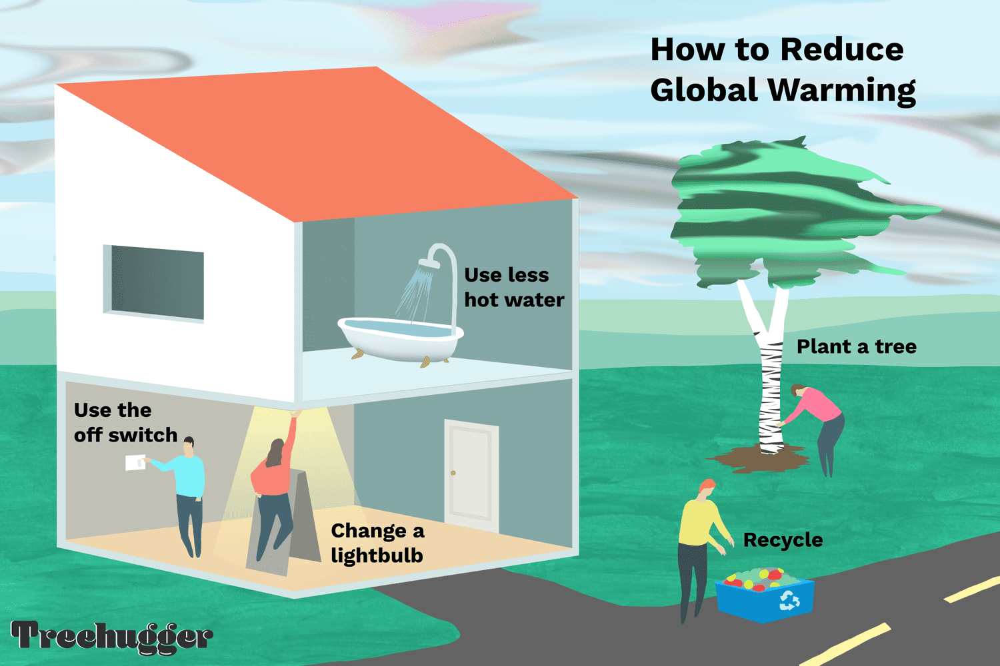
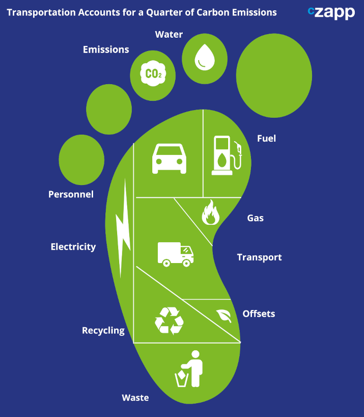
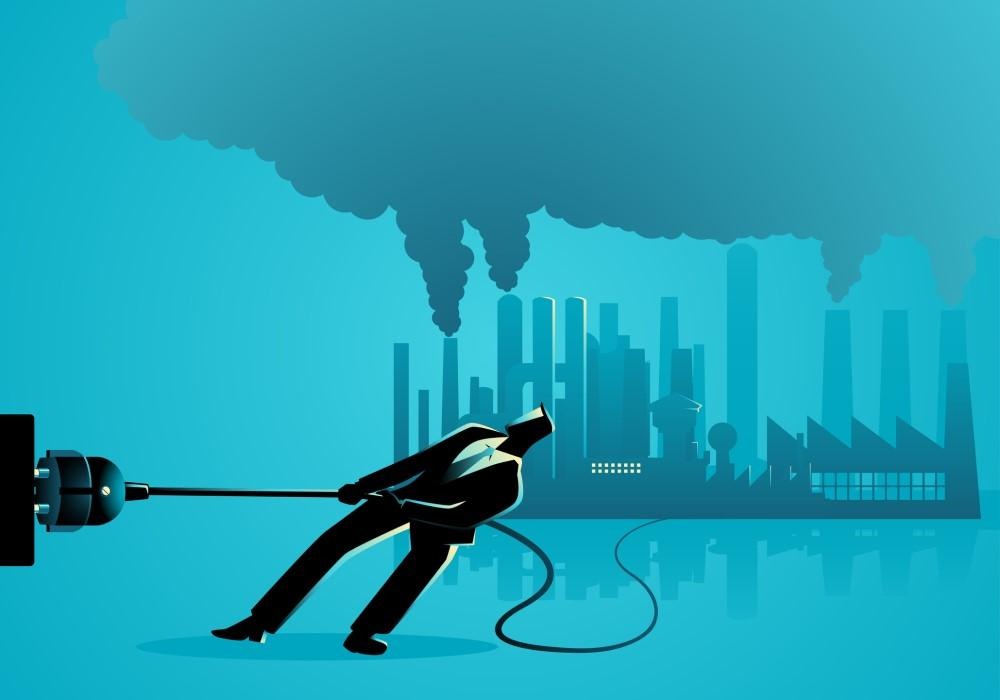

Learn More

Household Activities
- Reduce energy use:
- Turn off lights and unplug appliances when not in use.
- Use energy-saving light bulbs.
- Turn down your water heater to 120°F.
- Use less water:
- Install a low-flow showerhead.
- Insulate your home:
- Insulate your home as much as possible.
- Use renewable energy:
- Install solar panels and battery storage to generate your own electricity.
- Use renewable energy sources as much as possible.
- Reduce waste:
- Reduce your trash output.
- Recycle and reuse.
- Go paperless.
- Pass on plastic.
- Change your diet:
- Buy fresh, local produce.
- Eat more vegetables.
- Throw away less food.
- Use sustainable transportation:
- Walk, bike, or take public transportation.
- Switch to an electric vehicle.

Transportation
- Reduce travel:
- Walk, bike, or use public transportation when possible.
- Carpool with friends instead of driving alone.
- Use alternative modes of transportation:
- Use ride-sharing services.
- Participate in a car-share program.
- Use better vehicles:
- Buy vehicles with better fuel economy.
- Increase fuel efficiency.
- Avoid idling.
- Keep your tires filled.
- Improve vehicle technology:
- Service your vehicle regularly.
- Monitor speed and acceleration.
- Reduce fuel wasted in idling.
- Minimize aerodynamic drag.
- Drive in high gear.
- Use low-carbon fuels:
- Use biodiesel and bioethanol instead of diesel and gasoline.
- Transition to renewables and cleaner sources of fuel.
- Reduce transportation distance:
- Route planning optimization can help reduce carbon emissions.
- Improve vehicle efficiency:
- Use data analytics.
- Collaborate with suppliers and customers.

Industrialization
- Energy efficiency:
- This can include using renewable energy, combined heat and power, and fuel switching.
- Green innovations:
- These are processes that create green products, which can reduce energy intensity and carbon emissions.
- Carbon sequestration:
- This is a major tool for reducing anthropogenic carbon emissions. It involves increasing the rate of woody vegetation plantations.
- Decarbonization:
- This is a method of reducing the carbon and methane emissions released by an industry. For example, steel manufacturers can change how they produce steel to significantly reduce their carbon footprint.
- Fossil fuel divestment:
- Investors can withdraw investments from fossil fuel companies to signal a shift in investment priorities towards a low-carbon future.
- Carbon capture and storage:
- This is a way to remove, reduce, and reuse carbon emissions that are already circulating in the air.
- Green business practices:
- These can reduce carbon emissions and the amount of pollution expended.